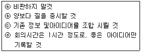
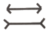
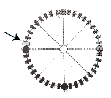

컬러리스트산업기사 (2016-05-08 기출문제)
1과목: 색채심리
1. 유행색에 대한 설명 중 틀린 것은?
- 어떤 계절이나 일정기간 동안 특별히 많은 사람에 의해 입혀지고, 선호도가 높은 색이다.
- 유행색은 선호되는 기간과 속도가 일정하지 않다.
- 패션산업에서는 실 시즌의 약 2년 전에 유행예측색이 제안되고 있다.
- 한국유행색협회는 국제유행색위원회와 무관하게 국내 활동에만 국한되어 있다.
(정답률: 80%)

2. 색채가 인체에 미치는 효과로 옳은 것은?
- 파랑 -갑상선 기능 자극, 부갑상선 기능 저하
- 빨강 -심신의 완화, 안정
- 녹색 -감각신경 자극, 혈액순환 촉진
- 보라 -정신적 자극, 감수성 조절
(정답률: 78%)
3. 고도의 운동감과 속도를 나타낼 때 가장 적절한 색은?
- 청색
- 회색
- 적색
- 보라색
(정답률: 81%)
4. 색채의 심리적 효과를 다면적으로 분석하는 방법으로 반대어에 대한 스케일로 측정하는 색채 감정법은?
- SD법
- 이미지 연상법
- 브레인스토밍
- SG법
(정답률: 86%)
5. 다음 중 마케팅 믹스 4P, 4C가 아닌 조합은?
- Product, Customer Value
- Period, Convenience
- Promotion, Communication
- Price, Cost to the Customer
(정답률: 66%)
6. 경고, 주의, 장애물, 위험물, 감전경고를 안내할 때
- 빨간색
- 노란색
- 파란색
- 녹색
(정답률: 76%)
7. 성인의 선호도 1위의 색으로 성별과 국가의 차별이 없이 일반적인 제품의 패키지 색으로 선정하기에 가장 적합한 것은?
- 빨강
- 파랑
- 녹색
- 회색
(정답률: 81%)
8. 올림픽 오륜마크의 색채에 사용되는 색채심리는?
- 기억색
- 지역색
- 상징색
- 고유색
(정답률: 78%)
9. 다음 중 색채가 갖는 공감각적 특성이 마케팅에 적용된 사례로 틀린 것은? 민족은 한색계통을 좋아한다.
- 주황색 계통의 레스토랑 실내
- 녹색 계통의 유기농 제품 상점 감각이 발달하여 선호한다.
- 파란색 계통의 음식 접시
- 갈색 계통의 커피 자판기
(정답률: 64%)
10. 향수 용기 및 포장디자인 시 향의 종류와 색채가 바르게 연결된 것은?
- 시원하고 상쾌한 민트 향 -golden yellow
- 섬세하고 에로틱한 향 -흰색, 금색
- 가볍고 강한(spicy) 향 -빨강, 검정
- 향과 색채이미지는 관련성이 없다.
(정답률: 69%)
11. 마케팅에서 사용되는 색채의 역할과 관련이 적은 것은?
- 상품의 차별화
- 기업의 이미지 통합
- 상품의 소비 유도
- 색채 순응의 효과
(정답률: 81%)
12. 색채가 지닌 상징적인 의미로 인해 색채가 국제언어로 활용되는 올바른 예는?
- 빨강 -소방기구 표시에 활용
- 노랑 -구급장비, 상비약 표시에 활용
- 초록 -장애물, 위험물 표시에 활용
- 자주 -장비의 수리 시 주의 신호로 활용
(정답률: 93%)
13. 맛을 대표하는 색채의 연결이 틀린 것은?
- 단맛 -베이지와 갈색의 배색
- 신맛 -노랑과 연두색의 배색
- 짠맛 -청록색과 회색의 배색
- 쓴맛 -밤색과 올리브 그린의 배색
(정답률: 57%)
14. 색채 마케팅 전략의 개발에 영향에 미치는 요인으로 가장 거리가 먼 것은?
- 라이프 스타일과 문화의 변화
- 환경문제와 환경운동의 영향
- 인구통계적 요인
- 정치와 법규의 규제 요인
(정답률: 82%)
15. 표본의 크기에 대한 설명 중 틀린 것은?
- 표본의 오차는 표본을 뽑게 되는 모집단의 크기에 따라 크게 달라진다.
- 표본의 사례수(크기)는 오차와 관련되어 있다.
- 적정 표본 크기는 허용오차 범위에 의해 달라진다.
- 전문성이 부족한 연구자들은 선행연구의 표본 크기를 고려하여 사례수를 결정한다.
(정답률: 48%)
16. 지구촌 각 지역과 민족의 색채선호가 틀린 것은?
- 라틴계 민족들은 선명한 난색계통의 의복이나 일상용품을 좋아한다.
- 피부과 희고 머리칼은 금발이며 눈이 파란 북유럽계의 민족은 한색계통을 좋아한다.
- 태양광선이 강도가 높은 곳에서는 시원한 파란색에 대한 감각이 발달하여 선호한다.
- 백야지역에서는 인간의 녹색시각이 우월하며 한색계통을 좋아한다.
(정답률: 79%)
17. 색채치료요법에 관한 설명으로 틀린 것은?
- 특정색의 보석을 지니거나 의복을 착용하여 치료하는 방법이 있다.
- 파란색을 잘못 사용하면 눈에 충격을 주어 피로를 일으키고, 초조를 유발할 수 있다.
- 색이 가진 고유한 파장과 진동수를 이용한 치료방법이다.
- 색채치료는 질병, 신체의 회복과 성장, 삶의 질에 영향에 미친다.
(정답률: 84%)
18. 단조로운 육체노동이 반복되는 작업장의 작업복 색채로 적합한 것은?
- 빨강
- 노랑
- 파랑
- 검정
(정답률: 76%)
19. 중국시장을 위한 휴대폰을 빨간색으로 선정한 것은 색채기획의 방법 중 어떤 점을 고려한 것인가?
- 문화권별 색채 선호를 고려한 기획
- 개인적인 색채 선호를 고려한 기획
- 풍토색을 고려한 기획
- 사용 연령대의 선호색채를 고려한 기획
(정답률: 92%)
20. 제품 디자인을 위한 색채 기호 조사에 관한 설명이 틀린 것은?
- 문화적인 요인과 인성적인 요인이 혼합되어 나타난다.
- 기업이 시장의 요구에 응하기 위해서는 색채의 선택 범위를 다양화하는 것이 좋다.
- 현대에 오면서 색채에 대한 요구나 만족도는 일정한 방향으로 한다.
- 자신의 감성을 억제하는 사람은 청색, 녹색을 좋아하는 적색을 싫어하는 경향이 있다.
(정답률: 68%)
2과목: 색채디자인
21. '집은 살기 위한 기계이다. '라고 말한 사람은?
- 윌터 그로피우스(Walter Gropius)
- 르 코르뷔지에(Le Corbusier)
- 안토니 가우디(Anthony Gaudi)
- 프랭크 로이드 라이트(Frank Lloyd Wright)
(정답률: 48%)
22. 기하학적 형태에 대한 설명 중 틀린 것은?
- 수학적 법칙에 근거하고 있다.
- 모든 자연물은 기하학적 형태를 띠고 있다.
- 단순성과 합리성을 가지고 있다.
- 19세기 말부터 20세기 초에 걸쳐 조형분야에서는 기하학적 형태가 커다란 발전을 보였다.
(정답률: 34%)
23. 테마공원, 버스 정류장 등에 도시민의 편의와 휴식을 위해 만들어진 시설물의 명칭은?
- 로드사인
- 인테리어
- 익스테리어
- 스트리트 퍼니처
(정답률: 84%)
24. 보기의 설명 중 브레인스토밍 법의 규칙으로 옳은 것은?

- ⓐ , ⓑ
- ⓑ , ⓒ
- ⓐ , ⓒ
- ⓐ , ⓓ
(정답률: 79%)
25. 디자인 역사에 대한 설명 중 옳은 것은?
- 구석기 시대에는 대개 주술적 또는 종교적 목적의 디자인이라 아름다움과 실용성을 더욱 강조했다.
- 18세기 영국에서 일어난 산업혁명은 예술혁명이자 공예혁명인 동시에 디자인혁명이었다.
- 중세 말 아시아에서 도시경제가 번영하게 되자 자연과 인간에 대한 사고방식이 바뀌었는데, 이를 고전문예의 부흥이라는 의미에서 르네상스라 불렀다.
- 크리스트교를 중심으로 한 중세 유럽문화는 인간성에 대한 이해나 개성의 창조력은 뒤떨어졌다.
(정답률: 47%)
26. 색채 디자인 계획 시 주조색은 2.5Y 8/2, 보조색은 6/4로 선정하였다. 다음 중 주조색과 인접색상으로2.5Y 색조의 차이가 많이 나는 강조색으로 적합한 것은?
- 2.5Y 9/2
- 2.5YR 3/2
- 5Y 9/3
- 5YR 8/2
(정답률: 48%)
27. 디자인사에 관한 설명으로 틀린 것은?
- 중세 고딕양식에서는 수직적 상승감이 두드러진다.
- 르네상스 양식에서는 수평적 안정감이 두드러진다.
- 19세기 영국에서 윌리엄 모리스가 미술공예운동을 주도하였다.
- 20세기 독일에서 피에트 몬드리안이 바우하우스 운동을 주도하였다.
(정답률: 72%)
28. 패션 색채디자인의 방법으로 틀린 것은?
- 경우에 따라 보색색상의 배색을 사용하기도 한다.
- 타 브랜드의 색채 경향을 분석해 본다.
- 색조배색은 되도록 배제하며 색상배색을 위주로 한다.
- 실제 소비자의 착용실태를 조사하여 유행색 예측자료를 활용한다.
(정답률: 83%)
29. 모발의 구조 중 염색 시 염모제가 침투하여 모발에 색상을 입히는 부분은?
- 표피층(Cuticle)
- 수질층(medulla)
- 간충물질(CMC)
- 피질층(Cortex)
(정답률: 54%)
30. 그림이 나타내는 것으로 옳은 것은?

- 방향의 착시
- 논리적 법칙
- 명암의 착시
- 길이의 착시
(정답률: 89%)
31. 절대주의(Suprematism)의 대표적인 러시아 예술가는?
- 칸딘스킨(Wassily Kandinsky)
- 타틀린(V.Tatlin)
- 로도첸코(Aleksandr M.Rodchenko)
- 말레비치(K.Malevich )
(정답률: 48%)
32. 디자인의 조건을 하나의 집합체로 각 원리에서 가리키는 모든 조건을 하나로 통일하는 것은?
- 합리성
- 질서성
- 경제성
- 심미성
(정답률: 59%)
33. 제품을 넣는 용기의 기능적, 미적 향상을 목적으로 하는 시각디자인 분야는?
- 포스터 디자인
- 신문광고 디자인
- 패키지 디자인
- 일러스트레이션
(정답률: 91%)
34. 조형요소 중 공간을 구성하는 단위이며, 공간효과를 나태내는 중요한 요소는?
- 점
- 선
- 면
- 색채
(정답률: 86%)
35. 디자인 형식원리의 하나로서, 부분과 부분 또는 부분과 전체와의 수량적 관계, 즉 면적과 길이의 대비 관계를 말하는 것은?
- 균형(balance)
- 모듈(module)
- 구성(composition)
- 비례(proportion)
(정답률: 74%)
36. 음성, 문자, 그림, 동영상 등 다양한 형식의 정보를 이용하여 안내시스템, 인터넷을 통한 사이버 강의등에서 활용되고 있는 디자인은?
- 일러스트레이션
- 멀티미디어 디자인
- 에디토리얼 디자인
- 아이덴티티 디자인
(정답률: 74%)
37. 컬러 플래닝 프로세스를 옳게 나열한 것은?
- 기획 → 색채설계 → 색채관리 → 색채계획
- 기획 → 색채계획 → 색채설계 → 색채관리
- 기획 → 색채관리 → 색채계획 → 색채설계
- 기획 → 색채설계 → 색채계획 → 색채관리
(정답률: 80%)
38. C.I.P의 기본 시스템(Basic System) 요소로 틀린 것은?
- 심벌마크 (symbol mark)
- 로고타입 (logotype)
- 시그니처 (signature)
- 패키지 (package)
(정답률: 79%)
39. 제품디자인의 디자인 과정이 바르게 나열된 것은?
- 계획 → 조사 → 종합 → 분석 → 평가
- 조사 → 계획 → 분석 → 종합 → 평가
- 계획 → 조사 → 분석 → 평가 → 종합
- 계획 → 조사 → 분석 → 종합 → 평가
(정답률: 64%)
40. 시대적 디자인의 변화된 의미 중 1960년대에 해당하는 것은?
- 부가장식으로서의 디자인
- 기능적 표준 형태로서의 디자인
- 양식으로서의 디자인
- 사회적 기술로서의 디자인
(정답률: 50%)
3과목: 섹채관리
41. 도료의 기본구성 요소중다양한 색채를표현할 수있는 성분은?
- 안료(Pigment)
- 수지(Resin)
- 용제(Solvent)
- 첨가제(Additives)
(정답률: 83%)
42. 디지털 카메라나 스캐너와 같은 입력장치가 사용하는 주색은?
- 빨강(R), 파랑(B), 옐로우(Y)
- 마젠타(M), 옐로우(Y), 녹색(G)
- 빨강(R), 녹색(G), 파랑(B)
- 마젠타(M), 옐로우(Y), 시안(C)
(정답률: 85%)
43. 다음 중 LCD 모니터의 특성으로 틀린 것은?
- LCD 모니터는 시야각 문제가 발생할 수 있다.
- 각 픽셀에는 LAB 채널을 사용하여 컬러를 재현한다.
- 노트북의 내장 디스플레이로 사용된다.
- 시간이 지날수록 재현 컬러와 밝기가 변한다.
(정답률: 29%)
44. 표준광 A를 나타내는 것은?
- 상관색온도가 6540K인 CIE주광
- 가시파장영역의 평균적 주광
- 온도가 2856K인 완전방사체의 빛
- 자외영역을 포함한 여러 가지 상태에서의 주광
(정답률: 68%)
45. 다음 중 염료의 종류와 설명이 틀린 것은?
- 형광염료: 화학적 성분은 스틸벤, 이미디졸, 쿠마린 유도체 등이며, 소량만 사용해야하는 염료
- 합성염료: 명칭은 일반적으로 제조회사에 의한 종별 관칭, 색상, 부호의 세 부분으로 이루어짐
- 식용염료: 식료, 의약품, 화장품의 착색에 사용되는 것
- 천연염료: 어떠한 가공도 없이 천연물 그대로 만을 염료로 사용하는 것
(정답률: 46%)
46. CCM(Computer Color Matching)의 특징으로 거리가 먼 것은?
- 소재의 변화에 신속히 대응하는 데 도움을 준다.
- 조색시간을 단축할 수 있다.
- 다품종 소량생산의 효율을 높이는 데는 불리하다.
- CCM 소프트웨어는 Quality Control 부분과 Formulation 부분으로 구성되어 있다.
(정답률: 82%)
47. CIELAB 색공간에서 색좌표 +b와 -b가 나타내는 색상으로 순서대로 알맞은 것은?
- 노랑-파랑
- 파랑-노랑
- 빨강-녹색
- 노랑-빨강
(정답률: 81%)
48. 색채에 계산되는 표색계가 아닌 것은?
- CIELAB
- CIELUV
- CIELCh
- CIERGB
(정답률: 62%)
49. 다음 중 조건등색에 관한 설명으로 옳지 않은 것은?
- 컴퓨터 자동조색은 아이소메릭 매칭이 가능하다.
- 서로 다른 스펙트럼을 가진 물체는 조건등색이 일어나지 않는다.
- 메타메리즘 지수는 광원에 따라 색이 얼마나 바뀌는지 수치적으로 나타낼 수 있다.
- 색채 불일치는 광원에 따라 색이 다르게 보이는 현상이다.
(정답률: 60%)
50. 국제조명위원회(CIE)에 의해 규정된 표준광(standard illuminant)에 대한 설명 중 틀린 것은?
- 표준광은 실제하는 광원과 일치하지 않을 수 있다.
- 표준광은 CIE에 의해 규정된 조명의 이론적 스펙트럼 데이터를 말한다.
- 표준광 D 65 는 상관 색온도가 약 6500K인 CIE 주광이다.
- D65 는 인쇄물의 색 평가용으로 ISO 3664에 채용되어 있다.
(정답률: 58%)
51. 다음 중 그래픽 카드에 대한 설명으로 틀린 것은?
- 그래픽 카드에 따라 지원하는 최대 해상도가 다르다.
- 그래픽 카드에 상관없이 지원하는 컬러 심도는 동일하다.
- 그래픽 카드에 따라 사용할 수 있는 재생주기가 다르다.
- 그래픽 카드에 상관없이 재현되는 색역은 모니터에 따라 다르다.
(정답률: 79%)
52. 컬러 인덱스(CII : Color Index International)란 무엇인가?
- 안료회사에서 안료의 원산지를 표기한 데이터
- 안료의 사용방법에 따라 분류, 고유번호를 표기한 것
- 안료를 판매할 가격에 따라 분류한 데이터
- 안료를 각각 생산 국적에 따라 분류한 데이터
(정답률: 80%)
53. 다음 중 염기성 황색색소로서 단무지, 엿 등의 황색착색에 사용되는 인공착색료는?
- 오라민
- 샤프론
- 알파 캐로틴
- 베타 캐로틴
(정답률: 67%)
54. 짧은 파장의 빛이 입사하여 긴 파장의 빛을 복사하는 형광 현상이 있는 시료의 색채측정에 적합한 장비는?
- 후방분광방식의 분광색채계
- 전방분광방식의 분광색채계
- D65 광원의 필터식 색채계
- 이중분광방식의 분광광도계
(정답률: 74%)
55. 염색물의 일광견뢰도란?
- 염색물이 태양광선 아래에서 얼마나 습도에 견디는지를 그래프로 나타낸 것
- 염색물이 자연광 아래에서 얼마나 변색되는가를 나타내는 척도
- 염색물이 세탁에 의하여 얼마나 탈색되는가를 나타내는 정도
- 염색물이 습기와 온도에 의하여 얼마나 변색되는가를 평가하는 척도
(정답률: 70%)
56. 조명 및 수광의 기하학적 조건 중 반사물체의 경우가 아닌 것은?
- di:8
- d:d
- de:0
- 0:45x
(정답률: 35%)
57. 다음 중 염료와 색이 잘못 짝지어진 것은?
- 인디고 -파란색
- 모브 -보라색
- 플라보노이드 -노란색
- 안토시아닌 -초록색
(정답률: 49%)
58. 다음 중 장치의 색상재현영역이 기술되어 있는 것은?
- Calibration
- White point
- ICC Profile
- Gamma
(정답률: 52%)
59. 다음 중 CIELAB 공간의 불규일성을 보정한 색차식은?
- CIE94
- BFD(1:c)
- CMC
- CIEDE2000
(정답률: 73%)
60. 장치의존적(device-dependent) 색체계에 관한 설명 중 틀린 것은?
- RGB, CMYK 모드의 컬러가 여기에 해당된다.
- 장치의존적 컬러 데이터 자체에는 정확한 색이 규정되어 있지 않다.
- 장치의존적 색체계는 장치독립적 색체계와 함께 ICC 컬러프로파일에 사용된다.
- LAB나 XYZ는 계측장치로 얻어진 값으로 장치의존적 색체계이다.
(정답률: 20%)
4과목: 색채지각의이해
61. 빨강과 노랑바탕 위에 각각 주황을 놓으면, 빨강바탕 위의 주황이 노랑바탕 위의 주황에 비해 더 노란 기운을 띠는 것과 관련한 대비는?
- 명도대비
- 채도대비
- 보색대비
- 색상대비
(정답률: 86%)
62. 중간혼합에 대한 설명으로 틀린 것은?
- 중간혼합에는 회전혼합과 병치혼합의 두 가지 종류가 두 가지 종류가 있다.
- 병치혼합의 예로 직물의 색조 디자인을 들 수 있다.
- 색광에 의한 병치가법혼합의 예로 컬러 TV를 들 수 있다.
- 병치혼합에서 하만그리드 현상이 나타난다.
(정답률: 64%)
63. 빛에 대한설명 중옳은 것은?
- 분색된 단색광을 다시 프리즘을 통과시키면 다시 한 번 분광된다.
- 자외선은 파장이 짧아 열선으로 사용된다.
- 가시광선은 인간을 기준으로 한 것이므로 일부 다른 동물은이 외의것을 감지할수도 있다.
- 적외선은 자외선보다 파장이 짧지만 높은 에너지를 방출한다.
(정답률: 59%)
64. 같은 모양과 크기의 상자라도 검은색 상자가 흰색 상자보다 무겁게 보인다. 중량감에 주된 영향을 미치는 색의 속성은?
- 색상
- 명도
- 채도
- 순도
(정답률: 83%)
65. 가법혼색의 설명으로 틀린 것은?
- 병치혼합, 회전혼합도 일종의 가법혼색이다.
- 빛의 혼합과 같이 빛에 빛을 더하여 얻어지는 원리에 의한 것이다.
- 인상파 화가 쇠라의 점묘법에 의한 그림도 일종의 가법혼색에 의한 것이다.
- 가법혼색은 혼색할수록 점점 어두운 색이된다.
(정답률: 79%)
66. 같은 조명 아래에서 하얀색보다 밝게 느껴지는 색으로 양초나 불꽃의 색, 또는 암실에서 반투명 유리나 종이를 안쪽에서 강한 빛으로 비추었을 때 지각되는 색을 의미하는 것은?
- 투과
- 편광
- 광택
- 광휘
(정답률: 40%)
67. 수채화 물감에서 마젠타(M)과 노랑(Y)을 같은 양으로 혼합하였을 때 나오는 색은?
- 빨강(R)
- 녹색(G)
- 파랑(B)
- 시안(C)
(정답률: 85%)
68. 계시대비에 대한 설명이 틀린 것은?
- 계시대비는 먼저 본 색의 영향으로 다음에 본 색이 다르게 보이는 것을 말한다.
- 인접되는 색의 차이를 클수록 강해진다.
- 잔상과 구별하기 힘들다.
- 순간 다른 색상으로 보였다고 할지라도 일시적인 것이므로 시간이 지나면 원래 색으로 보인다.
(정답률: 46%)
69. 색채의 지각과 감정효과에 관한 내용으로 가장 타당성이 낮은 것은?
- 난색은 한색보다 진출해 보인다.
- 고채도의 색이 저채도의 색보다 주목성이 낮다.
- 난색이 한색보다 팽창해 보인다.
- 고명도의 색이 저명도의 색보다 가벼워 보인다.
(정답률: 82%)
70. 흰색, 회색, 그리고 검정색의 공통점이나 차이점에 대한 설명 중잘못된 것은?
- 명도가 다르다.
- 무채색이다.
- 색상이 없다.
- 채도가 다르다.
(정답률: 79%)
71. 색의 온도감에 가장 큰 영향을 미치는 색의 속성은?
- 색상
- 명도
- 채도
- 톤
(정답률: 63%)
72. 색채의 개념을 눈에서 대뇌로 연결되는 신경에서 일어나는 전기 화학적 작용이라는 의미를 함축하여 정의하고 있는 입장은?
- 화학적인 입장
- 물리학적인 입장
- 생리학의 입장
- 측색학의 입장
(정답률: 47%)
73. 일반적으로 부드러운 느낌을 주는 색은?
- 고명도, 고채도의 색
- 저명도, 고채도의 색
- 고명도, 저채도의 색
- 저명도, 저채도의 색
(정답률: 75%)
74. 빨강과 파랑의 두 색을 직접 섞지 않고, 색점을 찍어 배열한 후 거리를 두고 관찰하였다. 이때 관찰되는 색채변화로 올바른 것은?
- 중채도의 남색이 된다.
- 고채도의 자주가 된다.
- 두 색의 중간 색상, 명도, 채도가 된다.
- 두 색의 보색인 청록과 노랑의 영향으로 회색이 된다.
(정답률: 59%)
75. 파란색 선글라스를 끼고 보면 잠시 물체가 푸르게 보이던 것이 곧 익숙해져 본래의 물체색으로 보이는 것과 관련한 것은?
- 명암순응
- 색순응
- 연색성
- 항상성
(정답률: 81%)
76. 눈의 망막에 위치하는 광수용기 중 밤이나 어두운 곳에서 주로 동작하는 것은?
- 간상체
- 양극세포
- 파보세포
- 추상체
(정답률: 68%)
77. 색들끼리 서로 영향을 주어서 인접색에 가까운 것으로 느껴지게 하는 현상(효과)은?
- 맥콜로 효과
- 푸르킨예 현상
- 애브니 효과
- 전파효과
(정답률: 57%)
78. 다음 중 일반적으로 잔상의 출현과 비례되는 내용으로 비교적 거리가 먼 것은?
- 자극의 강도(强度)
- 자극의 경험
- 자극의 지속시간
- 자극의 크기
(정답률: 56%)
79. 안내표지판에 사용된 문자의 색이 멀리서도 인지하기 쉬운 정도를 무엇이라고 하는가?
- 명시도
- 온도감
- 경연감
- 시감도
(정답률: 82%)
80. 다음중 흰종이와 검은종이를 빠르게교차시켜 연속적으로 본 연속혼색은?
- 감산혼색
- 계시혼색
- 병치혼색
- 가산혼색
(정답률: 52%)
5과목: 색채체계의이해
81. NCS 색상환에서 흰 사각형의 위치에 해당하는 색상는?

- B90G
- G10Y
- R10B
- G90Y
(정답률: 55%)
82. 먼셀의 균형이론 관점에서 볼 때 가장 이상적인 조화로 묶인 것은?
- 5Y 8/3, 5R 3/7
- 7.5G 6/4, 2.5P 6/4
- 2.5R 2/2, 5B 5/5
- 5R 7/5, 5BG 3/5
(정답률: 20%)
83. 먼셀의 색채조화론에 관한 설명 중 틀린 것은?
- 균형의 원리가 색채조화의 기본이라 하였다.
- 다양한 무채색의 평균명도가 N7일 때 조화롭다.
- 명도와 채도가 모두 다른 반대색끼리는 회색척도에 준하여 정연한 가격으로하면 조화된다.
- 같은 명도와 채도를 가지는 색들은 자동적으로 눈을 즐겁게 한다.
(정답률: 56%)
84. 두 색의 차이를 부각시키기 위한 배색 방법이 아닌것은?
- 색상대비를 이용한 배색
- 명도대비를 이용한 배색
- 채도대비를 이용한 배색
- 계시대비를 이용한 배색
(정답률: 81%)
85. 다음 중 먼셀기호 5P 3/6과 가장 가까운 색은?
- 해맑은 보라
- 진한 보라
- 연한 보라
- 탁한 보라
(정답률: 50%)
86. CIELCH 색공간에 대한 설명이 틀린 것은?
- L*은 명도를 나타낸다.
- C*는 채도이고, h는 색상각이다.
- C*값은 중앙에서 0 이고, 중앙에서 멀어질수록 커진다.
- h의 0°는 +a*(노랑), 90°는 +b*(빨강), 180°는 -a*(파랑), 270°는 -b*(초록)이 된다.
(정답률: 74%)
87. 한국전통색에 대한 설명으로 틀린 것은?
- 유황색은 황색과 흑색의 혼합으로 얻어지는 간색이다.
- 녹색은 청색과 황색의 혼합으로 얻어지는 간색이다.
- 자색은 적색과 백색의 혼합으로 얻어지는 간색이다.
- 벽색은 청색과 백색의 혼합으로 얻어지는 간색이다.
(정답률: 55%)
88. 다음 중 색에 대한 의사소통이 간편하도록 색이름을 표준화한 색체계는?
- Munsell System
- NCS
- ISCC-NIST
- CIE XYZ
(정답률: 54%)
89. 색채표준의 필요성으로 틀린 것은?
- 인간 감성의 변화
- 정확한 측정
- 색채관리
- 정확한 전달
(정답률: 91%)
90. CIE 색도도에 대한 설명 중 틀린 것은?
- 실존하는 모든 색을 나타내기에 미흡하다.
- 백색광은 색도도의 중앙에 위치한다.
- 색도도 안의 한 점은 혼합색을 나타낸다.
- 순수파장의 색은 Yxy의 색도도 바깥둘레에 나타낸다.
(정답률: 49%)
91. DIN 색체계에 대한 설명으로 틀린 것은?
- 색상 : 암도 : 포화도의 순으로 표기한다.
- 색상을 24색으로 분할하였다.
- 암도의 표기는 D(Dunkelstufe)로 한다.
- 포화도는 S로 표기하며 0.15의 수로 표현한다.
(정답률: 54%)
92. 색채조화의 공통되는 원리가 아닌 것은?
- 질서의 원리
- 명료성의 원리
- 일괄성의 원리
- 대비의 원리
(정답률: 67%)
93. 연속배색을 색 속성별로 4가지로 분류할 때, 해당되지 않은 것은?
- 색상의 그라데이션
- 톤의 그라데이션
- 명도의 그라데이션
- 보색의 그라데이션
(정답률: 83%)
94. NCS 색체계 표기인 2070-G40Y에서 생략된 것은?
- 햐양색도
- 검정색도
- 색상
- 포화도
(정답률: 54%)
95. P.C.C.S. 색체계의 구성 특징에 대한 설명으로 가장 올바른 것은?
- 명도기호는 먼셀 색체계의 명도에 맞추어 배색은 9.5, 흑색은 1.5로 하여 총 10단계로 구성
- 물체색을 대상으로 함으로써 색료의 3원색을 기본으로 하여 색상환을 구성
- 채도는 9단계가 되도록 하여 모든 색상의 최고 채도를 9 S로 표시
- R, Y, G, B, P의 5색상과 각 색의 심리보색을 대응시켜 10색상을 기본 색상으로 구성
(정답률: 41%)
96. 색명에 관한 설명으로 틀린 것은?
- 관용색명법은 일상생활에서 쉽게 경험할 수 있어 정확한 색의 전달이 용이하다.
- 색을 표시하는 표색의 일종으로서 색의 전달방법으로 사용되고 있다.
- 색명은 크게 관용색명과 계통색명으로 구분한다.
- 계통색명은 기본색명에 수식어를 붙여 표현하는 방법이다.
(정답률: 52%)
97. 헤링의 4원색설에서 4원색이 아닌 것은?
- 빨강
- 노랑
- 초록
- 보라
(정답률: 87%)
98. 오스트발트 색체계의 설명으로 틀린 것은?
- 오스트발트 색입체를 수평으로 절단하면 흰색과 검정의 함유량이 같은 24개의 등가색환이 됨
- 등백계열은 등색상삼각형에 있어서 C-B와 평행선상에 있는 색으로 백색량이 모두 같은 계열
- 등흑계열은 등색상삼각형에 있어서 C-W와 평행선상에 있는 색으로 흑색량이 모두 같은 계열
- 등순계열은 등색상삼각형의 수직축과 평행선상의 색으로 순도가 같은 계열
(정답률: 48%)
99. 오스트발트 색체계의 표기방법으로 2ne로 표기된 기호에 대한 설명으로 옳은 것은?
- 2는 색상이며 먼셀의 N계열 색상과 동일한 의미를 가지고 있다.
- e는 백색량을 나타내며 그 비율은 5.6이다.
- n은 흑색량을 나타내며 그 비율은 65이다.
- 2는 색상, n은 백색량, e는 흑색량을 표시하는 것이다.
(정답률: 81%)
100. 다음 ISCC-NIST의 계통색명 표기방법 중 톤의 기호로서 명도와 채도가 가장 낮은 것에 해당하는 것은?
- moderate
- deep
- strong
- dark
(정답률: 72%)